Target: ko-ko-ya “Frevo!” (user-supplied YouTube audio, AAC 44.1 kHz). No ground-truth stem exists for this song: the table shows ground-truth metrics from the synthetic validation set plus reference-free proxies (AST classifier) on the target. Click a spectrogram to seek; the players of one candidate play in sync (use the solo buttons to switch).
| experiment | strategy | val SDR | val SI-SDR | SIR | SAR | retention | leak dB | hard SDR | tgt guitar p | tgt max leak p | runtime s | _best |
|---|---|---|---|---|---|---|---|---|---|---|---|---|
| exp050_R_r5_m4 | B+D+gain-refiner+HEM | 7.616 | 5.785 | 12.488 | 9.452 | 0.693 | -14.911 | 7.782 | 0.224 | 0.029 | 4347.528 | True |
| exp043_R_r4_c6 | B+D+gain-refiner+HEM | 6.901 | 5.065 | 11.588 | 9.326 | 0.618 | -15.406 | 7.019 | 0.179 | 0.030 | 3515.709 | False |
| exp037_R_r3_c6 | D+gain-refiner+HEM | 6.502 | 4.378 | 10.907 | 8.945 | 0.655 | -13.525 | 6.590 | 0.167 | 0.030 | 672.386 | False |
| exp047_D_htft_macou_ht78_mega4 | D (inference tuning) | 5.791 | 3.565 | 9.949 | 8.919 | 0.608 | -13.577 | 5.872 | 0.181 | 0.034 | 1270.342 | False |
| exp044_D_htft_macou_ht78_mega6 | D (inference tuning) | 5.583 | 3.175 | 9.381 | 8.735 | 0.564 | -13.592 | 5.674 | 0.171 | 0.035 | 273.880 | False |
| exp040_D_htft_macou_c4 | D (inference tuning) | 5.558 | 3.253 | 9.019 | 8.888 | 0.631 | -12.640 | 5.643 | 0.156 | 0.045 | 1477.937 | False |
| exp038_D_htft_macou_c6 | D (control) | 5.472 | 2.998 | 8.986 | 8.834 | 0.579 | -13.209 | 5.556 | 0.153 | 0.047 | 283.867 | False |
| exp046_D_htft_macou_ht78_mega8 | D (inference tuning) | 5.075 | 2.519 | 8.808 | 8.200 | 0.511 | -13.426 | 5.176 | 0.166 | 0.038 | 1683.193 | False |
| exp030_R_r3 | D+gain-refiner+HEM | 4.683 | 1.786 | 9.484 | 6.439 | 0.510 | -12.858 | 4.838 | 0.146 | 0.029 | 1590.249 | False |
| exp035_D_swme_htft_macou_wave_mean | D | 4.445 | 1.659 | 8.029 | 7.351 | 0.451 | -13.319 | 4.559 | 0.132 | 0.032 | 3267.514 | False |
| exp036_D_swme_htft_wave_mean | D | 4.259 | 1.577 | 6.919 | 8.292 | 0.545 | -11.593 | 4.317 | 0.133 | 0.031 | 2393.683 | False |
| exp033_B_xlance_minus_electric | B | 4.199 | 0.597 | 9.066 | 5.943 | 0.525 | -12.562 | 4.354 | 0.141 | 0.030 | 2345.076 | False |
| exp023_D_htft_macou_wave_mean | D | 4.157 | 1.220 | 8.428 | 6.620 | 0.434 | -13.214 | 4.255 | 0.137 | 0.042 | 922.438 | False |
| exp026_W_htft_macou_weights0.4-0.6 | D+tuning | 4.141 | 1.157 | 8.976 | 6.109 | 0.402 | -13.964 | 4.255 | 0.142 | 0.040 | 10.721 | False |
| exp019_D_htft_xl_macou_wave_mean | D | 4.085 | 1.155 | 7.229 | 7.594 | 0.477 | -12.377 | 4.215 | 0.132 | 0.032 | 1501.767 | False |
| exp024_D_htft_xl_macou_ht_wave_mean | D | 4.032 | 1.145 | 6.641 | 8.038 | 0.502 | -11.775 | 4.139 | 0.143 | 0.031 | 1552.128 | False |
| exp028_R_r1 | D+refiner | 3.894 | 0.154 | 9.427 | 4.055 | 0.412 | -15.283 | 4.073 | 0.190 | 0.025 | 1590.249 | False |
| exp029_R_r2 | D+refiner+HEM | 3.880 | 0.137 | 6.797 | 5.116 | 0.409 | -13.883 | 4.001 | 0.153 | 0.034 | 1590.249 | False |
| exp027_D_bandw_htft_macou | D | 3.811 | 0.568 | 11.768 | 4.066 | 0.357 | -16.075 | 3.940 | 0.214 | 0.035 | 922.438 | False |
| exp021_D_htft_mgtr_wave_mean | D | 3.765 | 0.712 | 7.223 | 6.943 | 0.476 | -11.942 | 3.855 | 0.137 | 0.043 | 922.438 | False |
| exp020_D_htft_xl_mgtr_wave_mean | D | 3.712 | 0.728 | 6.674 | 7.719 | 0.506 | -11.675 | 3.825 | 0.131 | 0.032 | 1501.767 | False |
| exp006_D_htft_xl_wave_mean | D | 3.637 | 0.980 | 6.120 | 8.586 | 0.583 | -10.748 | 3.702 | 0.133 | 0.031 | 627.935 | False |
| exp013_W_htft_xl_weights0.35-0.65 | D+tuning | 3.615 | 0.836 | 6.102 | 8.674 | 0.581 | -10.807 | 3.719 | 0.134 | 0.031 | 12.692 | False |
| exp007_D_htft_xl_mag_mean | D | 3.608 | 0.962 | 6.015 | 8.604 | 0.587 | -10.629 | 3.671 | 0.133 | 0.031 | 627.935 | False |
| exp022_D_xl_macou_wave_mean | D | 3.601 | -0.394 | 8.325 | 5.211 | 0.443 | -12.670 | 3.766 | 0.142 | 0.032 | 1453.160 | False |
| exp009_D_htft_xl_bec_wave_mean | D | 3.586 | 0.818 | 4.885 | 9.414 | 0.554 | -10.121 | 3.594 | 0.134 | 0.070 | 914.569 | False |
| exp010_D_htft_xl_bec_mag_median | D | 3.540 | 0.512 | 5.910 | 8.426 | 0.584 | -10.936 | 3.540 | 0.156 | 0.065 | 914.569 | False |
| exp012_D_htft_xl_w_wave_mean_wiener | D | 3.516 | 0.429 | 7.388 | 7.480 | 0.592 | -11.257 | 3.622 | 0.215 | 0.035 | 627.935 | False |
| exp008_D_htft_xl_mask_mean | D | 3.295 | 0.281 | 4.218 | 8.988 | 0.571 | -10.513 | 3.376 | 0.146 | 0.038 | 627.935 | False |
| exp017_D_htft_xl_mag_min | D | 3.269 | -0.711 | 8.680 | 5.016 | 0.445 | -13.986 | 3.467 | 0.162 | 0.031 | 627.935 | False |
| exp011_D_htft_xl_bec_mask_mean | D | 3.258 | 0.130 | 3.416 | 9.719 | 0.546 | -9.848 | 3.297 | 0.146 | 0.078 | 914.569 | False |
| exp015_A_mega_acoustic | A | 3.130 | -1.444 | 14.838 | 1.207 | 0.330 | -17.284 | 3.294 | 0.254 | 0.059 | 873.831 | False |
| exp048_C_xlance_violin_clarinet | C | 3.122 | -0.524 | 6.473 | 8.386 | 0.595 | -10.357 | 3.299 | 0.141 | 0.030 | 4052.139 | False |
| exp004_A_xlance | A | 3.117 | -0.525 | 6.470 | 8.398 | 0.595 | -10.354 | 3.294 | 0.141 | 0.030 | 579.329 | False |
| exp005_A_sw6 | A | 3.117 | -0.525 | 6.470 | 8.398 | 0.595 | -10.354 | 3.294 | 0.141 | 0.030 | 667.812 | False |
| exp003_A_htdemucs6s_ft | A | 3.072 | 0.239 | 6.711 | 6.772 | 0.623 | -9.862 | 3.082 | 0.139 | 0.051 | 48.606 | False |
| exp031_B_xlance_megaacoustic | B | 3.051 | -1.751 | 14.403 | 1.085 | 0.323 | -18.262 | 3.238 | 0.243 | 0.044 | 2345.076 | False |
| exp016_D_htft_xl_mag_max | D | 2.856 | 0.990 | 4.877 | 10.049 | 0.769 | -8.416 | 2.779 | 0.128 | 0.048 | 627.935 | False |
| exp001_A_htdemucs6s | A | 2.579 | -0.676 | 5.703 | 6.507 | 0.614 | -9.601 | 2.615 | 0.169 | 0.041 | 50.362 | False |
| exp018_A_mega_guitar | A | 2.550 | -2.520 | 8.875 | 2.802 | 0.406 | -12.129 | 2.728 | 0.245 | 0.045 | 873.831 | False |
| exp002_A_becruily | A | 2.100 | -1.841 | 3.244 | 7.350 | 0.521 | -8.255 | 1.973 | 0.259 | 0.192 | 286.634 | False |
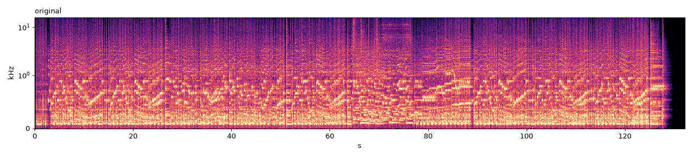
| champion | exp050_R_r5_m4 |
|---|
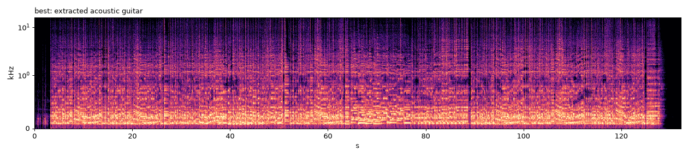
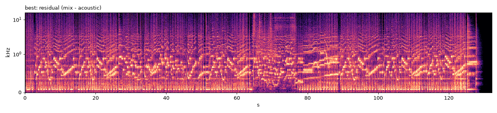
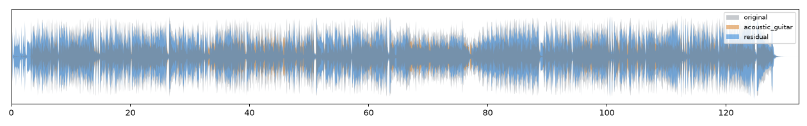
Loudest extracted segments (check for leakage): 130s (8.7 dB rel. mix), 76s (-3.1 dB rel. mix), 70s (-3.4 dB rel. mix)
| experiment | exp050_R_r5_m4 |
|---|---|
| strategy | B+D+gain-refiner+HEM |
| models | {"xlance_gtr": {"checkpoint": "gtr_mss.pth", "sha256": "813a92bd210e1fc7"}, "mega_multi": {"checkpoint": "multihead", "sha256": "1ce0838f692246a3"}, "htdemucs6s_gtrft": {"checkpoint": "htdemucs_6s", "sha256": "demucs:htdemucs_"}, "sw6": {"checkpoint": "BS-Rofo-SW-Fixed.ckpt", "sha256": "24e7d35ee9c64415"}} |
| pipeline | [{"id": "g", "model": "xlance_gtr", "input": "mix", "params": {"num_overlap": 2, "precision": "bf16", "chunk_size": 264600}}, {"id": "swme", "model": "mega_multi", "input": "g", "take": "~electric-guitar", "params": {"num_overlap": 2, "precision": "bf16", "chunk_size": 264600}}, {"id": "ht", "model": "htdemucs6s_gtrft", "input": "mix", "params": {"num_overlap": 2, "precision": "bf16"}}, {"id": "mm", "model": "mega_multi", "input": "mix", "params": {"num_overlap": 2, "precision": "bf16", "chunk_size": 176400}}, {"id": "sw", "model": "sw6", "input": "mix", "params": {"num_overlap": 2, "precision": "bf16", "chunk_size": 264600}}, {"id": "ref", "refiner": "artifacts/refiner/r5/model.pt", "positives": ["swme", "ht.guitar", "mm.acoustic-guitar", "sw.guitar", "mm.guitar"], "negatives": ["sw.other", "sw.piano", "sw.vocals", "sw.bass", "sw.drums", "mm.violin", "mm.woodwind", "mm.electric-guitar"]}] |
| runtime_s | 4347.528441512995 |
| val SDR | val SI-SDR | SIR | SAR | retention | leak dB | hard SDR | tgt guitar p | tgt max leak p | runtime s |
|---|---|---|---|---|---|---|---|---|---|
| 7.616 | 5.785 | 12.488 | 9.452 | 0.693 | -14.911 | 7.782 | 0.224 | 0.029 | 4347.528 |
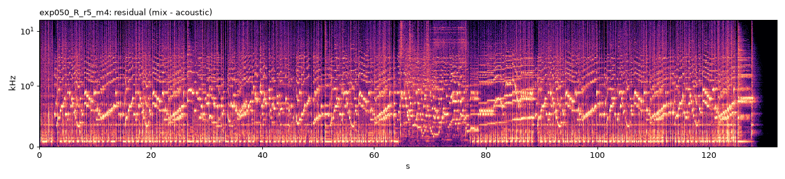
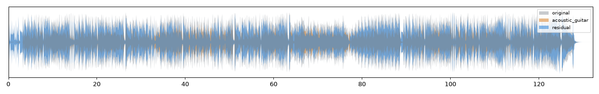
Loudest extracted segments (check for leakage): 130s (8.7 dB rel. mix), 76s (-3.1 dB rel. mix), 70s (-3.4 dB rel. mix)
| experiment | exp043_R_r4_c6 |
|---|---|
| strategy | B+D+gain-refiner+HEM |
| models | {"xlance_gtr": {"checkpoint": "gtr_mss.pth", "sha256": "813a92bd210e1fc7"}, "mega_multi": {"checkpoint": "multihead", "sha256": "1ce0838f692246a3"}, "htdemucs6s_gtrft": {"checkpoint": "htdemucs_6s", "sha256": "demucs:htdemucs_"}, "sw6": {"checkpoint": "BS-Rofo-SW-Fixed.ckpt", "sha256": "24e7d35ee9c64415"}} |
| pipeline | [{"id": "g", "model": "xlance_gtr", "input": "mix", "params": {"num_overlap": 2, "precision": "bf16", "chunk_size": 264600}}, {"id": "swme", "model": "mega_multi", "input": "g", "take": "~electric-guitar", "params": {"num_overlap": 2, "precision": "bf16", "chunk_size": 264600}}, {"id": "ht", "model": "htdemucs6s_gtrft", "input": "mix", "params": {"num_overlap": 2, "precision": "bf16", "chunk_size": 264600}}, {"id": "mm", "model": "mega_multi", "input": "mix", "params": {"num_overlap": 2, "precision": "bf16", "chunk_size": 264600}}, {"id": "sw", "model": "sw6", "input": "mix", "params": {"num_overlap": 2, "precision": "bf16", "chunk_size": 264600}}, {"id": "ref", "refiner": "artifacts/refiner/r4/model.pt", "positives": ["swme", "ht.guitar", "mm.acoustic-guitar", "sw.guitar", "mm.guitar"], "negatives": ["sw.other", "sw.piano", "sw.vocals", "sw.bass", "sw.drums", "mm.violin", "mm.woodwind", "mm.electric-guitar"]}] |
| runtime_s | 3515.708771351994 |
| val SDR | val SI-SDR | SIR | SAR | retention | leak dB | hard SDR | tgt guitar p | tgt max leak p | runtime s |
|---|---|---|---|---|---|---|---|---|---|
| 6.901 | 5.065 | 11.588 | 9.326 | 0.618 | -15.406 | 7.019 | 0.179 | 0.030 | 3515.709 |
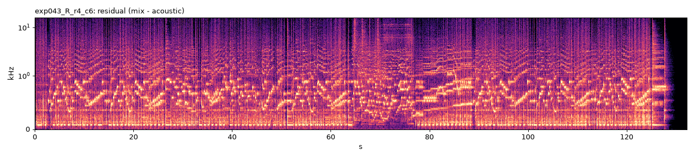
Loudest extracted segments (check for leakage): 130s (7.4 dB rel. mix), 76s (-3.5 dB rel. mix), 66s (-3.9 dB rel. mix)
| experiment | exp037_R_r3_c6 |
|---|---|
| strategy | D+gain-refiner+HEM |
| models | {"htdemucs6s_gtrft": {"checkpoint": "htdemucs_6s", "sha256": "demucs:htdemucs_"}, "mega_multi": {"checkpoint": "multihead", "sha256": "1ce0838f692246a3"}, "sw6": {"checkpoint": "BS-Rofo-SW-Fixed.ckpt", "sha256": "24e7d35ee9c64415"}} |
| pipeline | [{"id": "ht", "model": "htdemucs6s_gtrft", "input": "mix", "params": {"num_overlap": 2, "precision": "bf16", "chunk_size": 264600}}, {"id": "mm", "model": "mega_multi", "input": "mix", "params": {"num_overlap": 2, "precision": "bf16", "chunk_size": 264600}}, {"id": "sw", "model": "sw6", "input": "mix", "params": {"num_overlap": 2, "precision": "bf16", "chunk_size": 264600}}, {"id": "ref", "refiner": "artifacts/refiner/r3/model.pt", "positives": ["ht.guitar", "mm.acoustic-guitar", "sw.guitar", "mm.guitar"], "negatives": ["sw.other", "sw.piano", "sw.vocals", "sw.bass", "sw.drums", "mm.violin", "mm.woodwind", "mm.electric-guitar"]}] |
| runtime_s | 672.386080294993 |
| val SDR | val SI-SDR | SIR | SAR | retention | leak dB | hard SDR | tgt guitar p | tgt max leak p | runtime s |
|---|---|---|---|---|---|---|---|---|---|
| 6.502 | 4.378 | 10.907 | 8.945 | 0.655 | -13.525 | 6.590 | 0.167 | 0.030 | 672.386 |
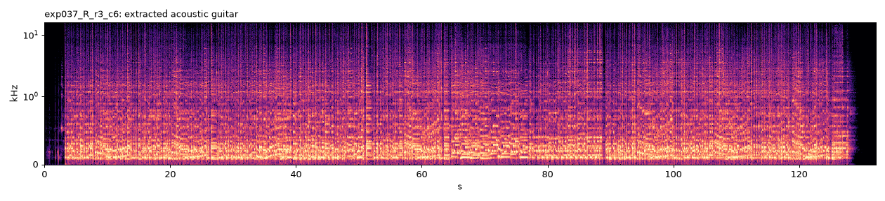
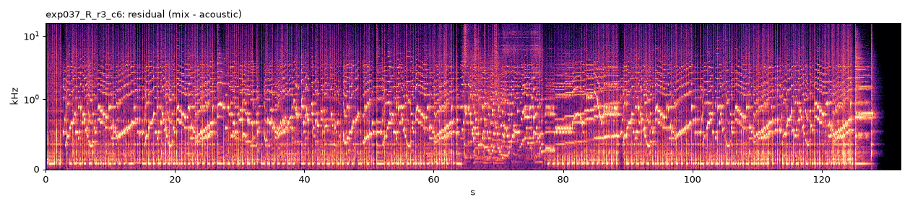
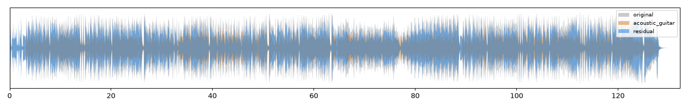
Loudest extracted segments (check for leakage): 130s (3.9 dB rel. mix), 76s (-3.3 dB rel. mix), 44s (-4.0 dB rel. mix)
| experiment | exp047_D_htft_macou_ht78_mega4 |
|---|---|
| strategy | D (inference tuning) |
| models | {"htdemucs6s_gtrft": {"checkpoint": "htdemucs_6s", "sha256": "demucs:htdemucs_"}, "mega_multi": {"checkpoint": "multihead", "sha256": "1ce0838f692246a3"}} |
| pipeline | [{"id": "m0_guitar", "input": "mix", "model": "htdemucs6s_gtrft", "params": {"num_overlap": 2, "precision": "bf16"}}, {"id": "m1_guitar", "input": "mix", "model": "mega_multi", "params": {"chunk_size": 176400, "num_overlap": 2, "precision": "bf16"}, "take": "acoustic-guitar"}, {"ensemble": ["m0_guitar", "m1_guitar"], "id": "ens", "method": "wave_mean"}] |
| runtime_s | 1270.341657789 |
| val SDR | val SI-SDR | SIR | SAR | retention | leak dB | hard SDR | tgt guitar p | tgt max leak p | runtime s |
|---|---|---|---|---|---|---|---|---|---|
| 5.791 | 3.565 | 9.949 | 8.919 | 0.608 | -13.577 | 5.872 | 0.181 | 0.034 | 1270.342 |
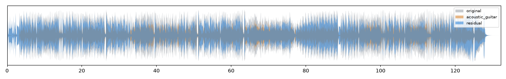
Loudest extracted segments (check for leakage): 130s (17.0 dB rel. mix), 66s (-3.6 dB rel. mix), 76s (-3.8 dB rel. mix)
| experiment | exp044_D_htft_macou_ht78_mega6 |
|---|---|
| strategy | D (inference tuning) |
| models | {"htdemucs6s_gtrft": {"checkpoint": "htdemucs_6s", "sha256": "demucs:htdemucs_"}, "mega_multi": {"checkpoint": "multihead", "sha256": "1ce0838f692246a3"}} |
| pipeline | [{"id": "m0_guitar", "input": "mix", "model": "htdemucs6s_gtrft", "params": {"num_overlap": 2, "precision": "bf16"}}, {"id": "m1_guitar", "input": "mix", "model": "mega_multi", "params": {"chunk_size": 264600, "num_overlap": 2, "precision": "bf16"}, "take": "acoustic-guitar"}, {"ensemble": ["m0_guitar", "m1_guitar"], "id": "ens", "method": "wave_mean"}] |
| runtime_s | 273.88040544599403 |
| val SDR | val SI-SDR | SIR | SAR | retention | leak dB | hard SDR | tgt guitar p | tgt max leak p | runtime s |
|---|---|---|---|---|---|---|---|---|---|
| 5.583 | 3.175 | 9.381 | 8.735 | 0.564 | -13.592 | 5.674 | 0.171 | 0.035 | 273.880 |
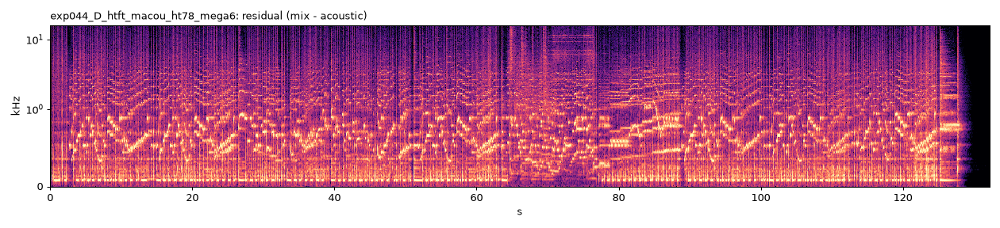
Loudest extracted segments (check for leakage): 130s (17.0 dB rel. mix), 76s (-3.7 dB rel. mix), 66s (-3.8 dB rel. mix)
| experiment | exp040_D_htft_macou_c4 |
|---|---|
| strategy | D (inference tuning) |
| models | {"htdemucs6s_gtrft": {"checkpoint": "htdemucs_6s", "sha256": "demucs:htdemucs_"}, "mega_multi": {"checkpoint": "multihead", "sha256": "1ce0838f692246a3"}} |
| pipeline | [{"id": "m0_guitar", "input": "mix", "model": "htdemucs6s_gtrft", "params": {"chunk_size": 176400, "num_overlap": 2, "precision": "bf16"}}, {"id": "m1_guitar", "input": "mix", "model": "mega_multi", "params": {"chunk_size": 176400, "num_overlap": 2, "precision": "bf16"}, "take": "acoustic-guitar"}, {"ensemble": ["m0_guitar", "m1_guitar"], "id": "ens", "method": "wave_mean"}] |
| runtime_s | 1477.9365463470003 |
| val SDR | val SI-SDR | SIR | SAR | retention | leak dB | hard SDR | tgt guitar p | tgt max leak p | runtime s |
|---|---|---|---|---|---|---|---|---|---|
| 5.558 | 3.253 | 9.019 | 8.888 | 0.631 | -12.640 | 5.643 | 0.156 | 0.045 | 1477.937 |
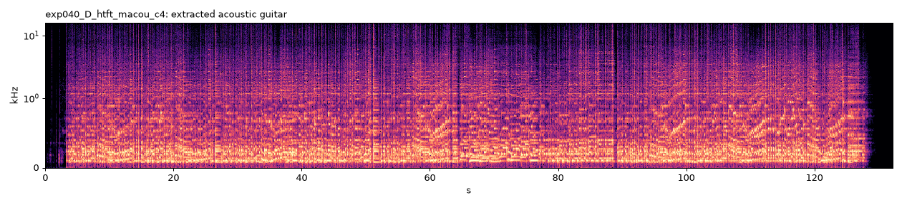
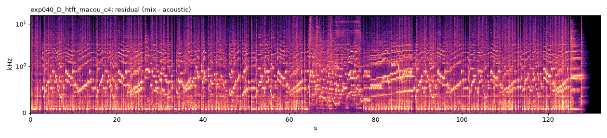
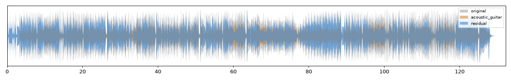
Loudest extracted segments (check for leakage): 76s (-3.6 dB rel. mix), 66s (-3.9 dB rel. mix), 70s (-4.2 dB rel. mix)
| experiment | exp038_D_htft_macou_c6 |
|---|---|
| strategy | D (control) |
| models | {"htdemucs6s_gtrft": {"checkpoint": "htdemucs_6s", "sha256": "demucs:htdemucs_"}, "mega_multi": {"checkpoint": "multihead", "sha256": "1ce0838f692246a3"}} |
| pipeline | [{"id": "m0_guitar", "model": "htdemucs6s_gtrft", "input": "mix", "params": {"num_overlap": 2, "precision": "bf16", "chunk_size": 264600}}, {"id": "m1_guitar", "model": "mega_multi", "input": "mix", "take": "acoustic-guitar", "params": {"num_overlap": 2, "precision": "bf16", "chunk_size": 264600}}, {"id": "ens", "ensemble": ["m0_guitar", "m1_guitar"], "method": "wave_mean"}] |
| runtime_s | 283.8669159629935 |
| val SDR | val SI-SDR | SIR | SAR | retention | leak dB | hard SDR | tgt guitar p | tgt max leak p | runtime s |
|---|---|---|---|---|---|---|---|---|---|
| 5.472 | 2.998 | 8.986 | 8.834 | 0.579 | -13.209 | 5.556 | 0.153 | 0.047 | 283.867 |
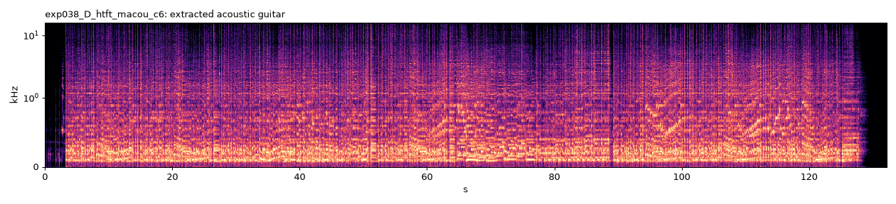
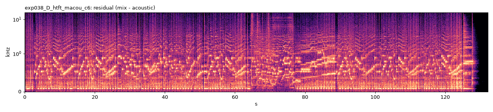
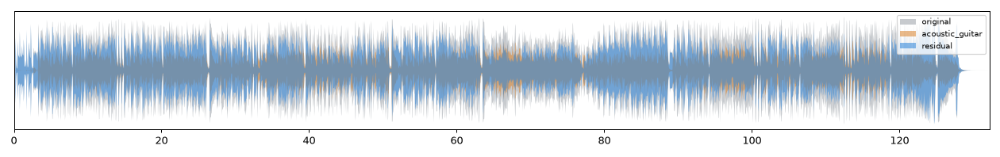
Loudest extracted segments (check for leakage): 130s (14.1 dB rel. mix), 66s (-3.6 dB rel. mix), 76s (-3.7 dB rel. mix)
| experiment | exp046_D_htft_macou_ht78_mega8 |
|---|---|
| strategy | D (inference tuning) |
| models | {"htdemucs6s_gtrft": {"checkpoint": "htdemucs_6s", "sha256": "demucs:htdemucs_"}, "mega_multi": {"checkpoint": "multihead", "sha256": "1ce0838f692246a3"}} |
| pipeline | [{"id": "m0_guitar", "input": "mix", "model": "htdemucs6s_gtrft", "params": {"num_overlap": 2, "precision": "bf16"}}, {"id": "m1_guitar", "input": "mix", "model": "mega_multi", "params": {"chunk_size": 352800, "num_overlap": 2, "precision": "bf16"}, "take": "acoustic-guitar"}, {"ensemble": ["m0_guitar", "m1_guitar"], "id": "ens", "method": "wave_mean"}] |
| runtime_s | 1683.1933790650035 |
| val SDR | val SI-SDR | SIR | SAR | retention | leak dB | hard SDR | tgt guitar p | tgt max leak p | runtime s |
|---|---|---|---|---|---|---|---|---|---|
| 5.075 | 2.519 | 8.808 | 8.200 | 0.511 | -13.426 | 5.176 | 0.166 | 0.038 | 1683.193 |
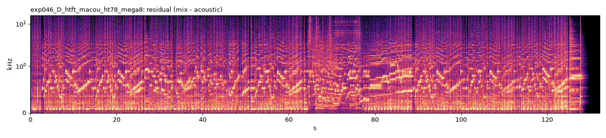
Loudest extracted segments (check for leakage): 130s (17.0 dB rel. mix), 76s (-3.9 dB rel. mix), 96s (-4.9 dB rel. mix)
| experiment | exp030_R_r3 |
|---|---|
| strategy | D+gain-refiner+HEM |
| models | {"htdemucs6s_gtrft": {"checkpoint": "htdemucs_6s", "sha256": "demucs:htdemucs_"}, "mega_multi": {"checkpoint": "multihead", "sha256": "1ce0838f692246a3"}, "sw6": {"checkpoint": "BS-Rofo-SW-Fixed.ckpt", "sha256": "24e7d35ee9c64415"}} |
| pipeline | [{"id": "ht", "model": "htdemucs6s_gtrft", "input": "mix", "params": {"num_overlap": 2, "precision": "bf16"}}, {"id": "mm", "model": "mega_multi", "input": "mix", "params": {"num_overlap": 2, "precision": "bf16"}}, {"id": "sw", "model": "sw6", "input": "mix", "params": {"num_overlap": 2, "precision": "bf16"}}, {"id": "ref", "refiner": "artifacts/refiner/r3/model.pt", "positives": ["ht.guitar", "mm.acoustic-guitar", "sw.guitar", "mm.guitar"], "negatives": ["sw.other", "sw.piano", "sw.vocals", "sw.bass", "sw.drums", "mm.violin", "mm.woodwind", "mm.electric-guitar"]}] |
| runtime_s | 1590.2492341449995 |
| val SDR | val SI-SDR | SIR | SAR | retention | leak dB | hard SDR | tgt guitar p | tgt max leak p | runtime s |
|---|---|---|---|---|---|---|---|---|---|
| 4.683 | 1.786 | 9.484 | 6.439 | 0.510 | -12.858 | 4.838 | 0.146 | 0.029 | 1590.249 |
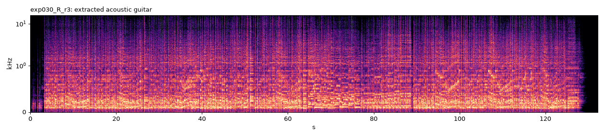
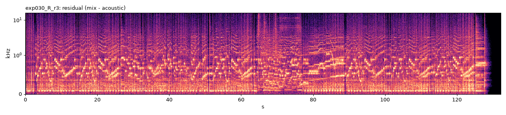
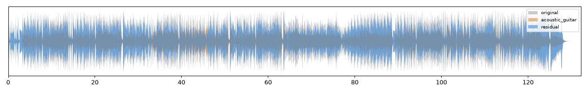
Loudest extracted segments (check for leakage): 130s (7.1 dB rel. mix), 44s (-5.0 dB rel. mix), 42s (-5.5 dB rel. mix)
| experiment | exp035_D_swme_htft_macou_wave_mean |
|---|---|
| strategy | D |
| models | {"xlance_gtr": {"checkpoint": "gtr_mss.pth", "sha256": "813a92bd210e1fc7"}, "mega_multi": {"checkpoint": "multihead", "sha256": "1ce0838f692246a3"}, "htdemucs6s_gtrft": {"checkpoint": "htdemucs_6s", "sha256": "demucs:htdemucs_"}} |
| pipeline | [{"id": "m0_g", "model": "xlance_gtr", "input": "mix", "params": {"num_overlap": 2, "precision": "bf16"}}, {"id": "m0_ag", "model": "mega_multi", "input": "m0_g", "take": "~electric-guitar", "params": {"num_overlap": 2, "precision": "bf16"}}, {"id": "m1_guitar", "model": "htdemucs6s_gtrft", "input": "mix", "params": {"num_overlap": 2, "precision": "bf16"}}, {"id": "m2_guitar", "model": "mega_multi", "input": "mix", "take": "acoustic-guitar", "params": {"num_overlap": 2, "precision": "bf16"}}, {"id": "ens", "ensemble": ["m0_ag", "m1_guitar", "m2_guitar"], "method": "wave_mean"}] |
| runtime_s | 3267.514052772003 |
| val SDR | val SI-SDR | SIR | SAR | retention | leak dB | hard SDR | tgt guitar p | tgt max leak p | runtime s |
|---|---|---|---|---|---|---|---|---|---|
| 4.445 | 1.659 | 8.029 | 7.351 | 0.451 | -13.319 | 4.559 | 0.132 | 0.032 | 3267.514 |
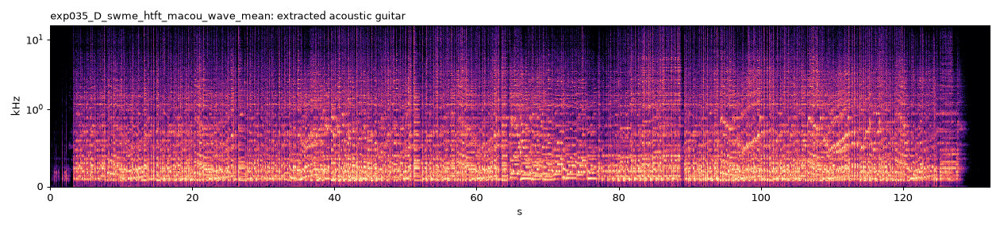
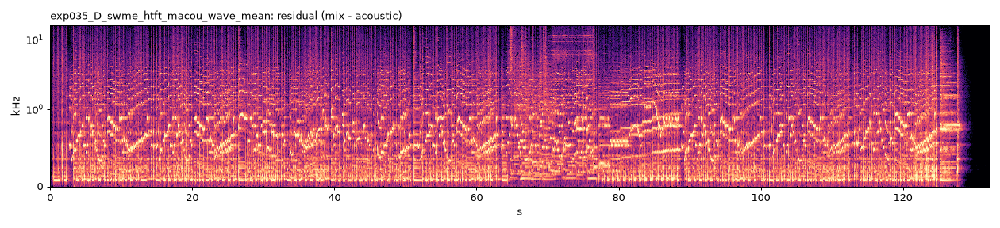
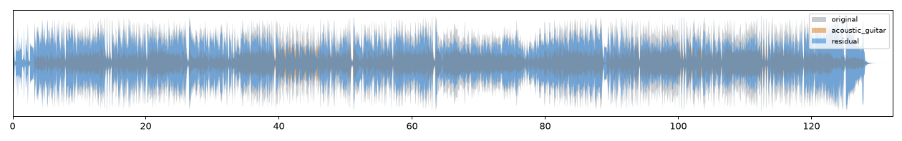
Loudest extracted segments (check for leakage): 130s (13.5 dB rel. mix), 44s (-5.7 dB rel. mix), 42s (-5.8 dB rel. mix)
| experiment | exp036_D_swme_htft_wave_mean |
|---|---|
| strategy | D |
| models | {"xlance_gtr": {"checkpoint": "gtr_mss.pth", "sha256": "813a92bd210e1fc7"}, "mega_multi": {"checkpoint": "multihead", "sha256": "1ce0838f692246a3"}, "htdemucs6s_gtrft": {"checkpoint": "htdemucs_6s", "sha256": "demucs:htdemucs_"}} |
| pipeline | [{"id": "m0_g", "model": "xlance_gtr", "input": "mix", "params": {"num_overlap": 2, "precision": "bf16"}}, {"id": "m0_ag", "model": "mega_multi", "input": "m0_g", "take": "~electric-guitar", "params": {"num_overlap": 2, "precision": "bf16"}}, {"id": "m1_guitar", "model": "htdemucs6s_gtrft", "input": "mix", "params": {"num_overlap": 2, "precision": "bf16"}}, {"id": "ens", "ensemble": ["m0_ag", "m1_guitar"], "method": "wave_mean"}] |
| runtime_s | 2393.682560600004 |
| val SDR | val SI-SDR | SIR | SAR | retention | leak dB | hard SDR | tgt guitar p | tgt max leak p | runtime s |
|---|---|---|---|---|---|---|---|---|---|
| 4.259 | 1.577 | 6.919 | 8.292 | 0.545 | -11.593 | 4.317 | 0.133 | 0.031 | 2393.683 |
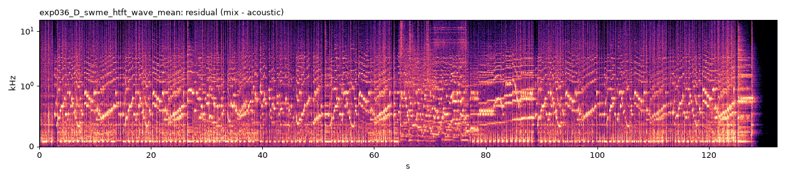
Loudest extracted segments (check for leakage): 130s (17.0 dB rel. mix), 44s (-3.1 dB rel. mix), 42s (-3.3 dB rel. mix)
| experiment | exp033_B_xlance_minus_electric |
|---|---|
| strategy | B |
| models | {"xlance_gtr": {"checkpoint": "gtr_mss.pth", "sha256": "813a92bd210e1fc7"}, "mega_multi": {"checkpoint": "multihead", "sha256": "1ce0838f692246a3"}} |
| pipeline | [{"id": "g", "model": "xlance_gtr", "input": "mix", "params": {"num_overlap": 2, "precision": "bf16"}}, {"id": "ag", "model": "mega_multi", "input": "g", "take": "~electric-guitar", "params": {"num_overlap": 2, "precision": "bf16"}}] |
| runtime_s | 2345.0764498720036 |
| val SDR | val SI-SDR | SIR | SAR | retention | leak dB | hard SDR | tgt guitar p | tgt max leak p | runtime s |
|---|---|---|---|---|---|---|---|---|---|
| 4.199 | 0.597 | 9.066 | 5.943 | 0.525 | -12.562 | 4.354 | 0.141 | 0.030 | 2345.076 |
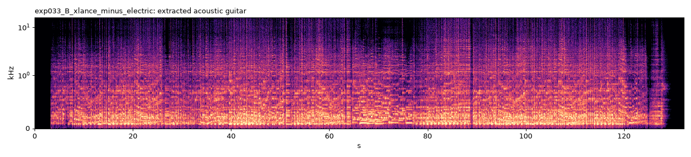
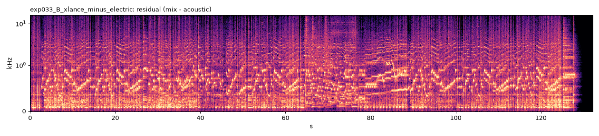
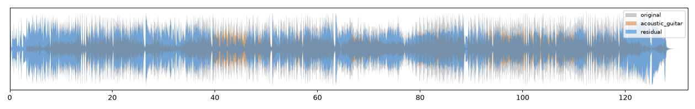
Loudest extracted segments (check for leakage): 42s (-2.5 dB rel. mix), 44s (-2.8 dB rel. mix), 40s (-3.0 dB rel. mix)